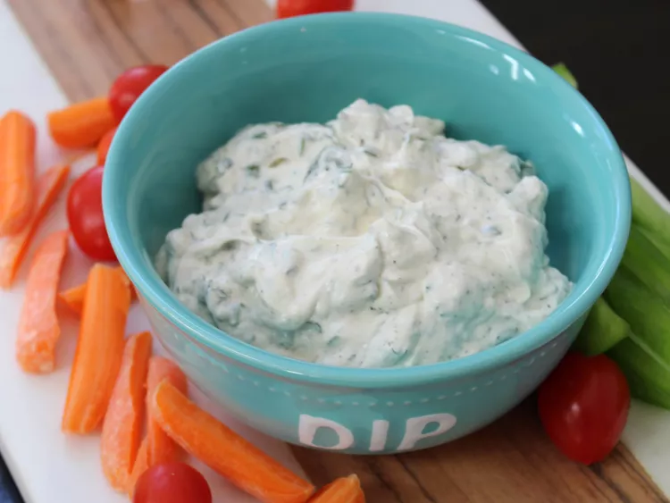

Pancetta Primavera Rigatoni

Description
This easy herb dip is made with sour cream and mayonnaise mixed with parsley, basil, chives, and dill. Best if chilled in the refrigerator for a few hours to overnight. Serve dip with veggies or crackers.
Ingredients
- 1/2 cup sour cream
- 1/2 cup mayonnaise
- 2 tablespoons minced fresh parsley
- 2 tablespoons minced fresh basil
- 2 tablespoons minced fresh chives
- 2 tablespoons minced fresh dill
- salt and pepper to taste
Steps
- Combine sour cream, mayonnaise, parsley, basil, chives, dill, salt, and pepper together in a bowl.
- Chill in refrigerator overnight or 8 hours.
Home